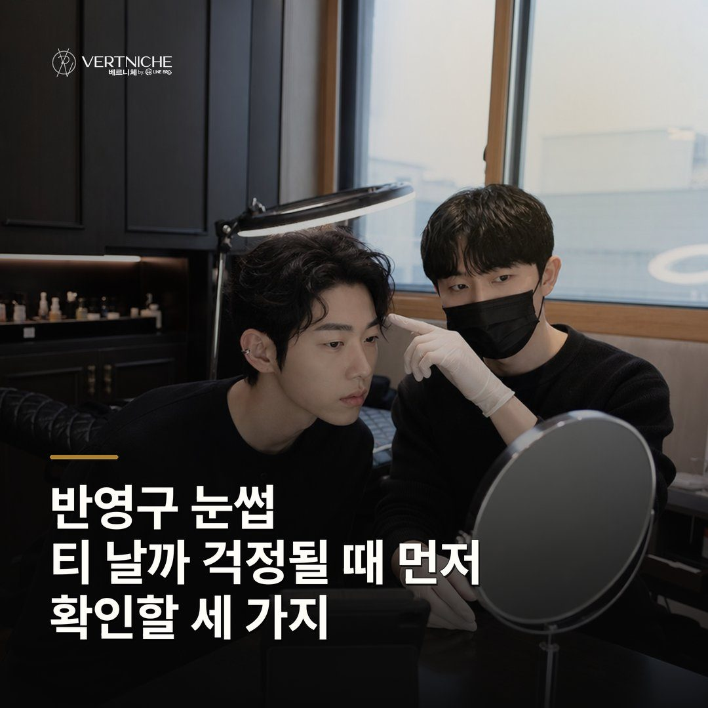

반영구 눈썹, 티 날까 걱정될 때 먼저 확인할 세 가지

- 반영구 눈썹 티는 진하기에서 갈린다, 얇게 결을 살려야 과해 보이지 않는다
- 앞머리 시작점을 코 옆 라인 기준으로 잡아야 떠 보이지 않는다
- 예전에 받은 자국이 있으면 그것부터 확인하고 디자인을 잡아야 한다
반영구 눈썹이 티 날까 걱정되는 분들을 위해, 티를 가르는 진짜 기준 세 가지를 원장이 상담 기준으로 정리했습니다.
티는 진하기에서 갈려요, 짙게 넣을수록 좋은 게 아닙니다
예전 남자 눈썹 문신이 유난히 티 났던 이유가 있어요. 그때는 굵고 진하게가 유행이라, 피부 속에 잉크를 깊게 박아서 오래가게 만들었거든요.
모양은 코 옆 라인 기준으로 잡아야 떠 보이지 않아요
진하기만큼 중요한 게 시작점이에요. 눈썹이 티 나 보이는 분들 보면 모양 자체가 얼굴 골격이랑 안 맞는 경우가 많거든요.
예전에 받은 자국이 있으면 그것부터 봐야 해요
다시 하러 오시는 분들이 특히 겁을 많이 내세요. 예전에 받은 자국이 아직 피부에 남아 있으면, 원하는 모양으로 확 틀기가 어렵거든요.
결은 살리고, 돌이킬 수 없는 선택은 신중하게
반영구는 한 번 들어가면 돌이키기가 쉽지 않아요. 얼마 전에도 처음 오신 분께 "모양은 지금 봐야 해요, 해버리면 돌이킬 수 없어요" 하고 양쪽 대칭을 거울로 한 번 더 같이 봤거든요.
상담 때 확인할 것
- 앞머리 시작점 — 코 옆에서 곧게 올라온 선에 맞는지
- 좌우 대칭 — 한쪽 길이나 높이가 짧지 않은지
- 숱 상태 — 털 없는 구간을 얼마나, 어떻게 채울지
- 라인 변형 여지 — 나중에 줄일 수 있게 여유를 뒀는지
자주 묻는 질문
반영구 눈썹 하면 주변에서 바로 알아보나요?
과하게 진하거나 위치가 어긋나지 않으면 남들 눈엔 생각보다 티가 많이 안 나요. 다만 모양이 바뀌니까 처음엔 본인 스스로 티 난다고 느낄 수 있어요. 사실 티가 아예 안 날 거면 굳이 시술받으실 의미가 없겠죠.
처음엔 자연스러워도 시간 지나면 진해지거나 퍼지지 않나요?
깊게 넣으면 퍼질 수 있어서, 저는 얇게 들어가는 쪽을 권해요. 반영구라 보통 1년에서 1년 반 정도 유지되고 그 뒤로 서서히 연해져요. 처음부터 과하게 안 넣는 게 오래 자연스러운 비결이에요.
예전에 받은 눈썹이 남아 있는데 다시 할 수 있나요?
남은 자국 상태를 먼저 봐야 해요. 색이 많이 남아 있으면 그걸 살리거나 덮는 방향으로 디자인을 잡아요. 상담에서 거울 같이 보면서 어디까지 가능한지 솔직하게 말씀드립니다.
요약입니다. 사례와 사진이 있는 전체 글은 네이버 블로그에서 볼 수 있습니다.